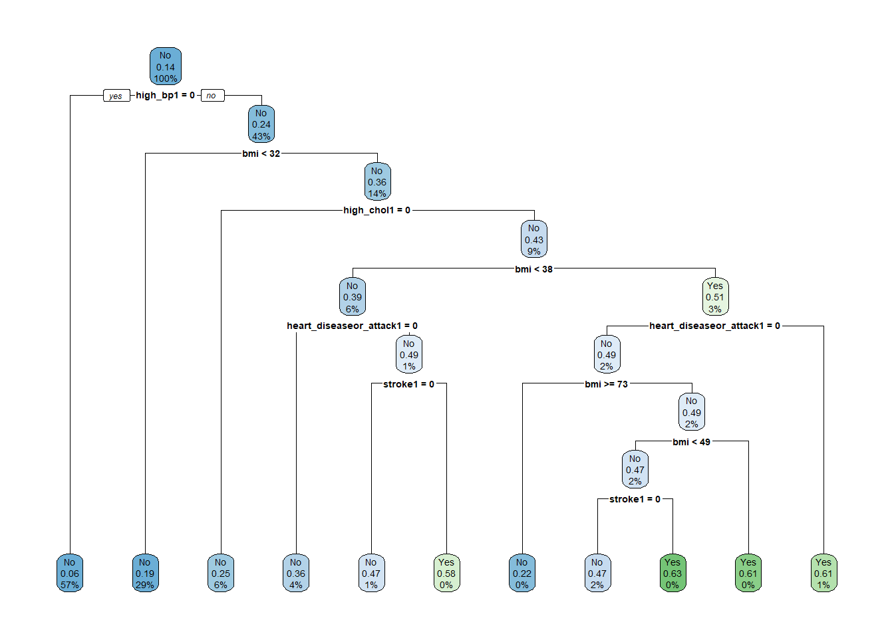

df <- read_csv("diabetes_binary_health_indicators_BRFSS2015.csv") %>%
clean_names() %>%
mutate(
diabetes_binary = factor(diabetes_binary, labels = c("No", "Yes")),
high_bp = factor(high_bp),
smoker = factor(smoker),
phys_activity = factor(phys_activity),
bmi = as.numeric(bmi),
high_chol = factor(high_chol),
chol_check = factor(chol_check),
heart_diseaseor_attack = factor(heart_diseaseor_attack),
stroke = factor(stroke)
)
# Split data
set.seed(2025)
train_idx <- createDataPartition(df$diabetes_binary, p = 0.7, list = FALSE)
train_data <- df[train_idx, ]
test_data <- df[-train_idx, ]Modeling for Diabetes Prediction
1. Introduction
In this document, we model the probability of diabetes using health indicators from the 2015 BRFSS dataset. We use logistic regression, classification trees, and random forests to model the binary outcome diabetes_binary. Our goal is to identify the best-performing model using 5-fold cross-validation and logLoss as the performance metric.
2. Data Preparation
3. Logistic Regression
Explanation
A logistic regression model is suitable for binary outcomes, such as predicting diabetes status. It estimates the log-odds of the outcome as a linear combination of the predictors.
Model Fitting
ctrl <- trainControl(method = "cv", number = 5, classProbs = TRUE, summaryFunction = mnLogLoss)
logit_model1 <- train(diabetes_binary ~ high_bp + smoker + phys_activity,
data = train_data, method = "glm", family = "binomial",
trControl = ctrl, metric = "logLoss")
logit_model2 <- train(diabetes_binary ~ high_bp + bmi + phys_activity,
data = train_data, method = "glm", family = "binomial",
trControl = ctrl, metric = "logLoss")
logit_model3 <- train(diabetes_binary ~ high_bp + bmi + high_chol + chol_check,
data = train_data, method = "glm", family = "binomial",
trControl = ctrl, metric = "logLoss")Best Logistic Model
logit_models <- list(Model1 = logit_model1, Model2 = logit_model2, Model3 = logit_model3)
sapply(logit_models, function(m) min(m$results$logLoss)) Model1 Model2 Model3
0.3646704 0.3547407 0.3475828 logit_model <- logit_model3 # Assuming this one has the lowest logLossThe model using high_bp, bmi, high_chol, and chol_check (Model 3) achieved the lowest logLoss and is selected as the best logistic regression model.
4. Classification Tree
Explanation
Classification trees split the data based on predictor values to create homogeneous subgroups. They are easy to interpret but prone to overfitting.
Model Fitting
tree_grid <- expand.grid(cp = seq(0.001, 0.05, length.out = 10))
tree_model <- train(
diabetes_binary ~ high_bp + bmi + high_chol + chol_check + heart_diseaseor_attack + stroke,
data = train_data,
method = "rpart",
trControl = ctrl,
tuneGrid = tree_grid,
metric = "logLoss"
)Visualization
rpart.plot(tree_model$finalModel)
5. Random Forest
Explanation
A random forest builds multiple decision trees using bootstrapped samples and random subsets of predictors, improving stability and accuracy.
Model Fitting
rf_grid <- expand.grid(mtry = 2:4)
rf_model <- train(
diabetes_binary ~ high_bp + bmi + high_chol + chol_check + heart_diseaseor_attack + stroke,
data = train_data,
method = "rf",
trControl = ctrl,
tuneGrid = rf_grid,
metric = "logLoss",
ntree = 100
)6. Final Model Comparison
logit_prob <- predict(logit_model, newdata = test_data, type = "prob")[, "Yes"]
tree_prob <- predict(tree_model, newdata = test_data, type = "prob")[, "Yes"]
rf_prob <- predict(rf_model, newdata = test_data, type = "prob")[, "Yes"]
y_true <- ifelse(test_data$diabetes_binary == "Yes", 1, 0)
results <- tibble(
Model = c("Logistic Regression", "Classification Tree", "Random Forest"),
LogLoss = c(
LogLoss(logit_prob, y_true),
LogLoss(tree_prob, y_true),
LogLoss(rf_prob, y_true)
)
)
results# A tibble: 3 × 2
Model LogLoss
<chr> <dbl>
1 Logistic Regression 0.347
2 Classification Tree 0.358
3 Random Forest 3.86 7. Final Thoughts
Based on logLoss on the test set, we select the model with the lowest logLoss as the final model for deployment or interpretation. According to the comparison, the Logistic Regression model had the best performance.